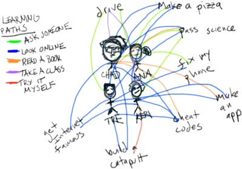
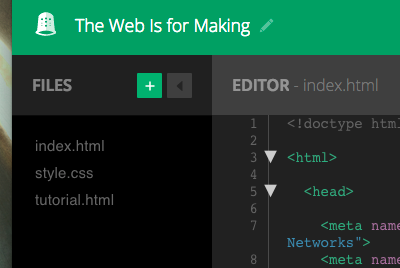

Web Literacy Basics II | Reading the Web
The Web Is a Tool for Learning
Made by Mozilla Learning Networks.
Learners will use Web-native instructions to make a meme or build a maker project in real life, learning navigating, remixing, and community participation.
2 to 2 1/2 hours
-
Preparation
Do the activity on your own to become familiar with it. Click through the links in the activity and try to make one or two of the suggested projects using the instructions you find online.
- Follow this link to the Thimble project for this activity.
- Click on the green "Remix" button in the upper right-hand corner of the window to go into the project's code.
- Click on the "Tutorial" pane next to the "Preview" pane in the upper right-hand corner of the coding window.
- Follow the steps in the tutorial to complete the activity. You may also need to check back here and complete some of the steps in this lesson plan to successfully finish the Thimble project.
You may also wish to set up an account on teach.mozilla.org that you can share with your learners. This will save time later when they are ready to use Thimble's new "selfie" feature to take pictures of their projects.
Review this definition of the word "Remix", so that you can help your learners (and colleagues!) understand that they can remix their projects to customize or improve them.
Post the URL, or Web address, of today's make somewhere highly visible in your room. You may want to post it as a shortened link using a service like bit.ly.
-
20
minIntroduction
Welcome your students and explain that today we're going to use the Web as a tool for learning. We'll use what we learn to build something awesome. Explain that today we will
- Pick a project we want to make from a list of beginner, intermediate, and advanced choices.
- Learn to read directions on the Web to make a project in real life.
- Learn to use Mozilla's Thimble tool to document and share our work in safe ways.
- Reflect on what we can learn from different communities on the Web.
To begin, tell your students that we're going to think about where we go to learn new things right now. Maybe some of us already use the Web to learn inside or outside school. Maybe some of us have teachers or mentors or siblings or guardians we ask for help to learn something new. Some of us, gasp, may even still use books to learn!
Explain that we're going to map where we learn using different colored markers and poster paper. We'll make a key together that represents the different ways we learn, and we'll use the key to connect little stick figures of ourselves to the things we've learned or want to learn.
Here are the steps:
- Ask students to make groups of 3 or 4, or use a way to randomly (or purposefully) assign students to groups of the same size.
- Pass out a piece of poster paper and a heap of markers to each group, or ask group members to grab those supplies.
- Ask group members to make little stick figures of themselves in the middle of the paper and to label their figures with their names.
- Have the group make a key everyone can draw in a corner of her group's poster. They key should use a different color for each of these Learning pathways: Ask Someone, Look Online, Read a Book, Take a Class, and Try it Myself. Feel free to use the suggested colors.
- Next, give groups 5 minutes to brainstorm all the things they've learned or that they want to learn. Ask them to write down everything they can think of on their group's poster.
- After the brainstorm, give students another 5 minutes to connect their stick figures to whatever they learned or want to learn using the color of the learning pathway they think helped them the most or would help them the most.

- Once learners have mapped themselves and their pathways, ask each group to take a minute or two to reflect on which pathway - or pathways - the group used the most in learning new things.
- Finally, have each group share its poster and have a spokesperson from each group say which pathway the group used the most.
Note any patterns you see and point out how students' learning maps look a lot like the Web, which is a network for sharing ideas and information. Suggest that our class is a network like that, too - we are a learning Web!
Once every group has had a chance to share its poster, ask learners to sit at their computers and go to the webpage for today's activity.
45
minMake a Project
Now it's time to set students loose on making projects using the instructions from one of the projects linked to from today's activity. Ask students to scan through the projects on the webpage and to pick one to try in the next 45 minutes.
Help students who struggle to make a choice or to read text online and make sure students know they can help one another. Let students collaborate in pairs if it helps everyone be successful with a project. Invite students to work anywhere in the room that feels comfortable and has enough space and remind learners of community norms around sharing and valuing materials and supplies.
Give time checks every five minutes or so and allow for 5-10 minutes of clean-up time at the end of the build.
After clean-up, have learners go back to their computers to remix today's project with pictures of what they made.
This is also a good spot to pause and split up the activity between two classes or sessions if you need to.
20
minDocument Projects with Thimble's Seflie Feature
Invite students to hit the remix button on today's activity. Hitting that button will take learners into the code of the webpage that holds the activity. Ask students to login using their Thimble accounts by clicking on "Log in" at the very upper right-hand corner of the screen.
Once students log in, it's time to remix. On the right side of the screen, above the preview window, learners should see a "tutorial" tab. Ask learners to click on that tab to discover how they can switch the picture on the webpage with pictures of their projects.
Ask students to go to steps 3 and 4 to take pictures of their projects in Thimble and to swap out the old picture for their new ones. Read the directions aloud and then help students who experience difficulty following them. Students should
- Click on the plus symbol.

- Choose "Upload."
- Choose "Take a selfie."
- Follow the steps in the tutorial to embed "selfie1.png" into their projects.
Allow some time for students to play with the selfie feature, but be clear that today we want to document our work with the camera and be wise about how many other pictures of ourselves we take online.
Once each student or pair of students has a picture taken and embedded in the webpage, gather the class together for reflection.
15
minReflection
Facilitate a reflective discussion of what and how students learned today. Use questions like these or develop your own questions that bring students back to considering what it was like to learn from instructions and communities on the Web.
Before you begin, remind students of community norms about kindness and encourage them to talk about their own learning, not about other people.
- What worked for you or seemed like fun in today's learning?
- What didn't work or seemed difficult?
- How was learning from the Web similar to or different from other ways you learn?
- Before class today, did any of you ever use any of the websites we visited? What did you think of them? Did your opinion change today for any reason?
- Do you think you would go back to one of the community sites we used today to learn something else or to share instructions for a project you made up?
- What makes the Web "good" for sharing, teaching, and learning?
- What makes sharing, teaching, or learning difficult on the Web?
- What were the easiest and hardest parts of swapping out your picture today? What did you learn by changing the picture?
- Would you change your map from the beginning of class in any way based on what and how you learned online today?
- What could you search for on the Web on your own after today's project?
- What could you try to learn on the Web on your own after today's project?
You may ask students to document or record their answers for assessment. Be sure to help each student find a way to share that works for her, as well as for you, so you can gauge her learning about today's topic without a particular tool (like paper/pencil) blocking a student's expression.